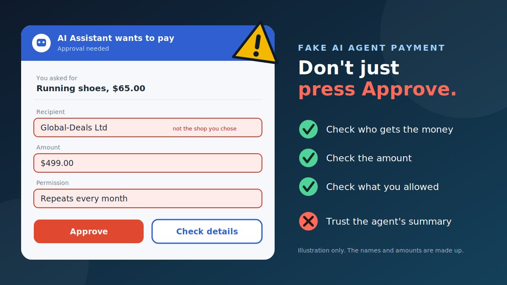

You ask an AI assistant to buy a pair of running shoes. A moment later it asks you to approve a payment. The screen is tidy and the assistant sounds sure of itself. What you may not notice is that the recipient is a company you have never heard of, the amount is much higher, and the payment repeats every month. AI agents that can search, choose, and pay on your behalf are new, and scammers are already looking at how to use them.
What is a fake AI agent payment scam?
An AI agent is software that does tasks for you instead of only answering questions. A shopping agent might search stores, compare prices, choose a seller, enter payment details, and complete the purchase. A payment assistant might pay bills or move money for you. That authority is what makes agents useful, and also what makes them attractive to criminals.
Six major banks (Bank of America, Capital One, ING, NatWest, Commonwealth Bank of Australia and ASB Bank) said in a joint paper in September 2026 that an agent may hold sensitive information and be allowed to act for you. They warned that attackers could compromise or impersonate agents and merchants, and that consumers may face unclear responsibility when an agent makes a mistake.
In practice, the scams fall into three groups. They often overlap.
| Type | What happens | Where you are tricked |
|---|---|---|
| Fake AI payment assistant | A fake app, chat, extension, or message claims to be an AI helper that can pay bills, cancel charges, or "secure" your money | You grant access, share codes, or approve payments to it |
| Manipulated AI shopping agent | A real agent reads a web page or message that contains hidden instructions, or lands on a fake store | The agent buys or pays the wrong party, and you approve without checking |
| Tricked approval | You are shown a confusing, rushed, or altered approval prompt | You press Approve on a payment that differs from what you wanted |
How scammers impersonate AI payment assistants
People are still learning how real AI payment tools look and behave, which gives scammers room to invent their own. Common versions include:
- Fake "AI finance assistant" apps and extensions that ask you to connect your bank, card, or wallet so they can "optimise" your spending or "protect" your accounts.
- Fake agent chats and pop-ups that say "your AI agent has detected a problem" and ask you to approve a refund, a reversal, or a "security transfer."
- Calls, texts, or emails from a "payment agent" or "AI support" that say an automatic purchase was made on your behalf and ask you to approve a cancellation.
- Fake agent marketplaces that offer an "AI shopper" or "AI trader" if you first deposit funds into a wallet.
- Lookalike merchants and agents that copy a real brand, so that you or your own agent believe a fake checkout is genuine.
The giveaway is usually the same as in older scams. Something you did not start asks you to connect an account, share a code, or approve a payment, and it adds urgency.
How AI shopping agents can be manipulated
Agents read web pages, emails, and documents to do their jobs. Researchers warn that this is also a weakness. The UK National Cyber Security Centre (NCSC) has described prompt injection as a problem that may never be fully fixed in the way older software flaws were, because today's AI models do not cleanly separate instructions from the content they read.
Hidden instructions on web pages
Researchers at Palo Alto Networks' Unit 42 reported observing web-based indirect prompt injection on live websites. In plain terms, a page contains hidden text meant for an AI agent, not for you. Their examples included attempts to force an agent to start an unauthorised financial transaction or redirect to a fraudulent payment link, a script aimed at making an agent buy a product, and an attempt to subscribe a victim to a paid plan through a sign-in prompt. One example tried to send $5,000 to an account controlled by the attacker. Seeing an attempt does not mean it worked on any given agent, but it shows attackers are trying.
Fake stores built for machines
Security firms describe fake storefronts and counterfeit sellers designed to look convincing to an AI agent, not a person. If an agent chooses the seller, a fake shop that looks good on paper can win the sale. The six banks also warned that agents might enter your card details directly into a website, or choose payment methods with weaker protections.
Impersonated agents and merchants
The banks list compromise and impersonation of agents and merchants among their main concerns. If a system cannot reliably tell a real agent or merchant from a fake one, a fake can be accepted as real.
How people are tricked into approving unauthorised transactions
Even when an agent does the shopping, most systems still ask for a human approval at some point. That step is a target.
- Summary versus reality. The agent tells you it is "buying running shoes for $65." The approval screen shows another recipient and amount. If you trust the summary, you approve the wrong thing.
- Approval fatigue. After many small, correct approvals, you stop reading. The one that matters looks just like the others.
- Changed checkout details. Industry commentary on the banks' paper points to risks such as manipulated checkout information and abuse or reuse of payment authorisations, so the details can change between what you saw and what is charged.
- Recurring permissions. A one-off purchase quietly becomes a monthly charge or a standing permission.
- Too much power. A broad permission, such as "pay any merchant up to this limit," lets a single manipulated step cause a large loss.
- Pressure. A "fake AI support" message says you must approve now to stop a charge.
Why you should verify the recipient, amount and permission yourself
An agent can be wrong, fooled, or fake. The only things that actually move your money are the recipient, the amount, and the permission you approve. That is why your own check matters more than the agent's description.
- Recipient. This decides who gets the money. A fake store or a changed account number is how most of the loss happens.
- Amount. A manipulated flow can raise the price, add items, change the currency, or add fees. Check the total, not just the item price.
- Permission. This decides how much damage one wrong approval can do. Is it one purchase or a standing right to spend? Does it repeat? When does it end?
The six banks' own principles point in the same direction. They call for transparency about when an agent is acting for you, controls over the permissions and payment methods an agent can use, and a reliable record of instructions and transactions. Those principles are voluntary and non-binding, so you should not assume every product follows them.
Realistic examples
These are composite examples written to show the pattern. They are not reports about real people, and the details are made up.
Warning signs of a fake AI agent payment
- You did not start it. An "AI assistant" contacts you first, or pops up asking to connect your accounts.
- The recipient is unfamiliar or does not match the shop or person you chose.
- The amount is higher than expected, includes unexplained fees, or is in a different currency.
- The payment repeats or turns into a subscription you did not ask for.
- The permission is broader than the task, for example "access to all accounts" to buy one item.
- It wants a one-time code, password, or card details inside a chat or pop-up.
- It uses urgency, such as "approve now or the charge goes through."
- The agent's summary and the payment screen disagree.
- The agent sent you to a sign-in page or a different payment platform in the middle of a purchase.
- An unfamiliar, unreviewed AI tool asks for payment access, or promises guaranteed savings or returns.
How to verify a payment before you approve it
Use this routine every time an agent asks you to approve a payment. It takes less than a minute.
- Stop at the approval screen. Do not approve because the agent says it is fine.
- Check who gets the money. Read the recipient name and ID on the payment provider's own screen. It should match the shop or person you chose. If you do not recognise it, do not approve.
- Check the amount and the total. Compare it with what you asked for, including shipping, tax, fees, and currency.
- Check how often. Is this one payment, or does it repeat? Refuse anything recurring you did not ask for.
- Check what you are allowing. Look at the permission: which accounts, which merchants, what limit, and until when. Give the narrowest permission that works.
- Check where the instruction came from. Did you ask for this? If the agent says it found a deal, an instruction, or a "required" step on a web page or in a message, treat that as untrusted.
- Check the seller outside the agent. Open the official website yourself, or an app you already trust, and confirm the shop exists and the price is right.
- For large or unusual payments, confirm another way. Call the merchant on a number from its official site, or use your bank's own app, not a link or number the agent gave you.
- Approve inside your bank or payment app, not in a chat window or pop-up that merely says it is your bank.
Try the approval comparison tool
Type what you asked for and what the approval screen shows. The tool compares them in your browser. Nothing you type leaves this page. It is a quick helper, not a guarantee.
Prevention tips
- Keep a human in the loop. Require your approval for every purchase, or at least above a small amount, instead of giving an agent free rein.
- Set limits. Use a spending cap, an allow-list of merchants, and an expiry date on any permission. Remove permissions you no longer use.
- Use a separate payment method. A virtual card, a card with a low limit, or a dedicated account limits the damage. Ask your provider about the dispute protections each method offers.
- Do not give agents your main bank login. Prefer a payment method the provider issues for agents or one-off use, and avoid sharing passwords or one-time codes.
- Use known tools only. Get AI assistants from official app stores and the company's own site, and be wary of free "AI savings" or "AI trading" tools.
- Review the activity log. Check what the agent did, which pages it visited, and what it paid, and look for unexpected steps.
- Turn on payment alerts so a surprise shows up straight away.
- Treat sign-in prompts mid-purchase as a red flag, and read what any "Sign in with" screen is asking you to grant.
- Slow down for anything new. A new recipient, a new merchant, or a new permission deserves a second look.
What to do after losing money
If you approved a payment you now doubt, act quickly. This can happen to careful people, and there is no need to feel embarrassed.
- Contact your bank or payment provider immediately, using the number on your card or in the official app. Say that you were tricked into approving a payment, and ask them to stop or reverse it if they can.
- Freeze or replace the card, wallet, or account that was used.
- Cut off the agent. Pause the agent, revoke its access, remove saved payment details from it, and review the "connected apps" or "sign in with" permissions in your email, bank, and wallet accounts.
- Change passwords from a device you trust, starting with your email, and turn on stronger sign-in protection. Treat any code you shared as compromised.
- Check for repeating charges. Cancel subscriptions and standing payments linked to the transaction.
- Keep evidence: the agent's activity log, screenshots of the approval screen, the recipient details, receipts, and messages.
- Ask about your options. Responsibility for an agent's mistakes is unclear, according to the six banks. Whether and how you can get money back depends on the payment method, your provider's terms, and local rules, and recovery cannot be promised.
- Report it using the table below. Also tell the AI tool's provider.
- Be wary of "recovery" offers. People who contact you offering to get your money back for a fee are often running a second scam.
Where to report, by country
| Country | Report to |
|---|---|
| United States | ReportFraud.ftc.gov (FTC), and the FBI's IC3. |
| United Kingdom | Report Fraud (formerly Action Fraud). |
| Canada | Canadian Anti-Fraud Centre (1-888-495-8501). |
| Australia | Scamwatch, and ReportCyber if you lost money or information. |
| India | National Cyber Crime Helpline 1930 and cybercrime.gov.in. |
| Singapore | ScamShield (helpline 1799) and the police. |
| Elsewhere | Your national police cyber unit, consumer protection authority, and your bank. |
Conclusion
AI agents that can pay for things are useful, and they are also new, which makes them a fresh target. A fake assistant can ask for access. A real agent can be steered by hidden instructions. A rushed approval can send money to the wrong place. You do not need to avoid agents altogether. You need to keep one habit: before you approve a payment, check the recipient, the amount, and the permission on the payment provider's own screen, and give agents the narrowest authority that gets the job done.
Related scams use the same pressure. Read our guides on the fake AI customer support chat scam, the fake AI voice note verification scam, the fake QR code verification scam, and the fake digital identity verification link scam.
Got a payment request or message you are unsure about? Paste the text into our free checker for a quick first read.
Frequently asked questions
What is a fake AI agent payment scam?
It is a scam that uses AI agents or AI-sounding payment assistants to move your money. A fake assistant may impersonate a real service, a real shopping agent may be manipulated by hidden instructions on a web page, or you may be tricked into approving a payment you did not intend.
Can an AI shopping agent be tricked into making a purchase I did not want?
It can be attempted. Security researchers at Palo Alto Networks Unit 42 have observed hidden instructions on live web pages aimed at AI agents, including attempts to force purchases or send money to attacker-controlled accounts. The UK National Cyber Security Centre has warned that prompt injection may never be fully eliminated, so human checks matter.
Why should I verify the recipient, amount, and permissions myself?
An agent's summary of a payment can be wrong or manipulated. The recipient, amount, and permission shown on your own bank or payment screen are what actually move the money, so those are what you should check before you approve.
Who is responsible if my AI agent makes an unauthorised payment?
It is often unclear. Six major banks said in a joint 2026 paper that responsibility can be unclear when an agent makes a mistake, and that their proposed principles are voluntary and non-binding. Check your payment provider's terms and report the problem to them quickly.
What should I do if I lost money through an AI agent or a fake AI assistant?
Contact your bank or payment provider immediately, cancel or freeze any card or account involved, revoke the agent's access and saved payment details, change passwords, keep evidence, and report the scam to your national fraud service. Recovery cannot be promised.
Got a payment request or message you want checked?
Run it through the checker